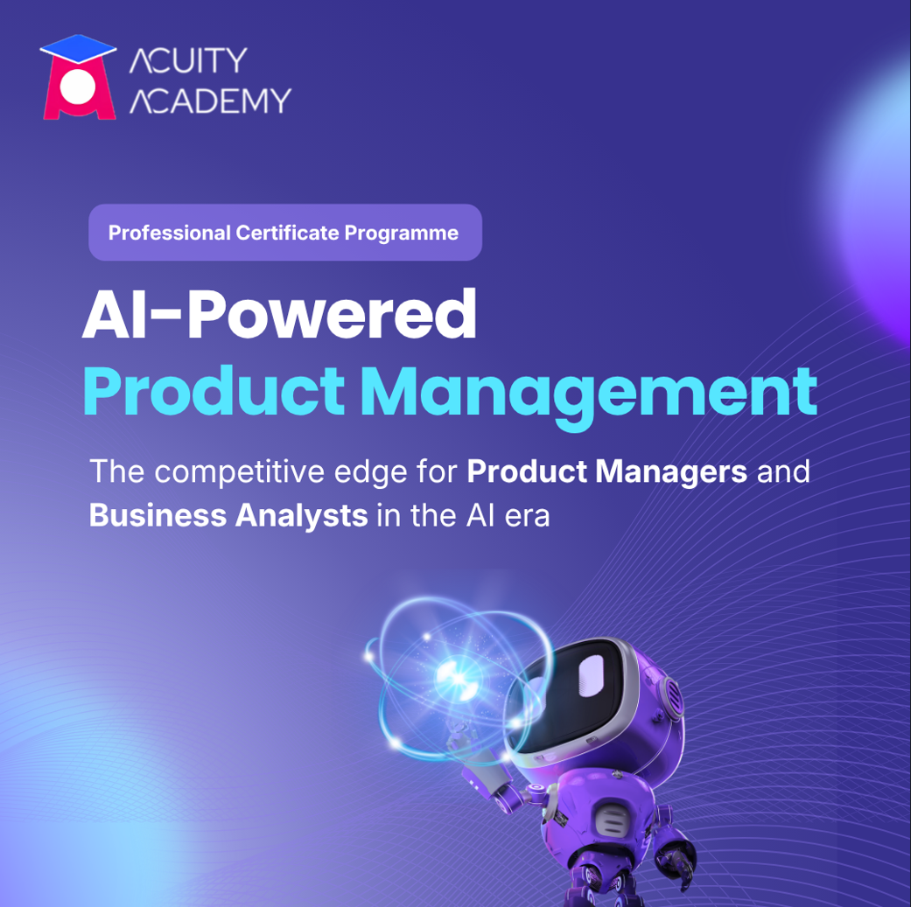
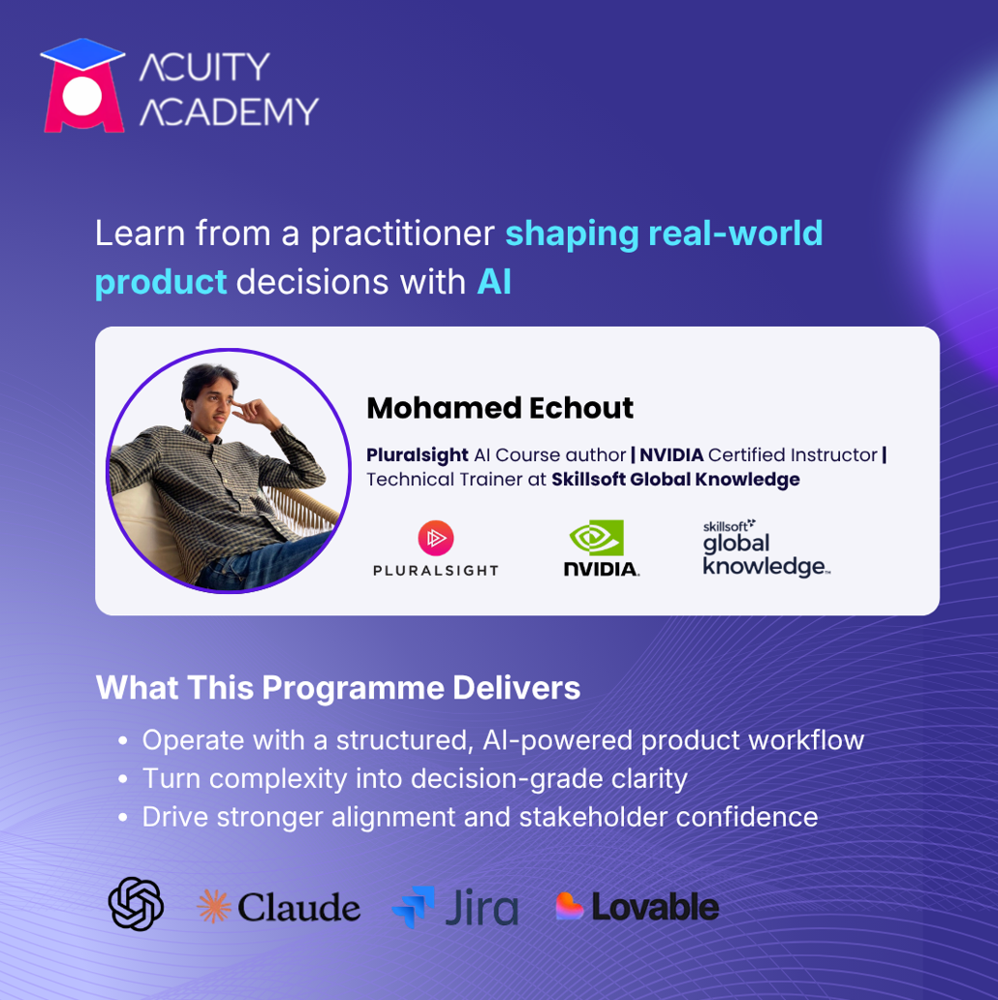
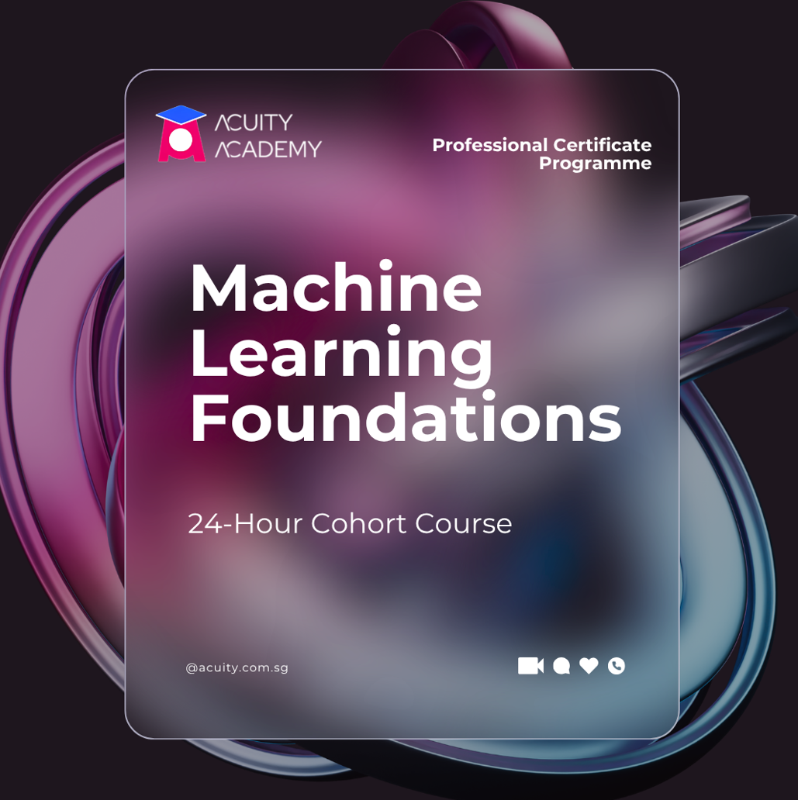
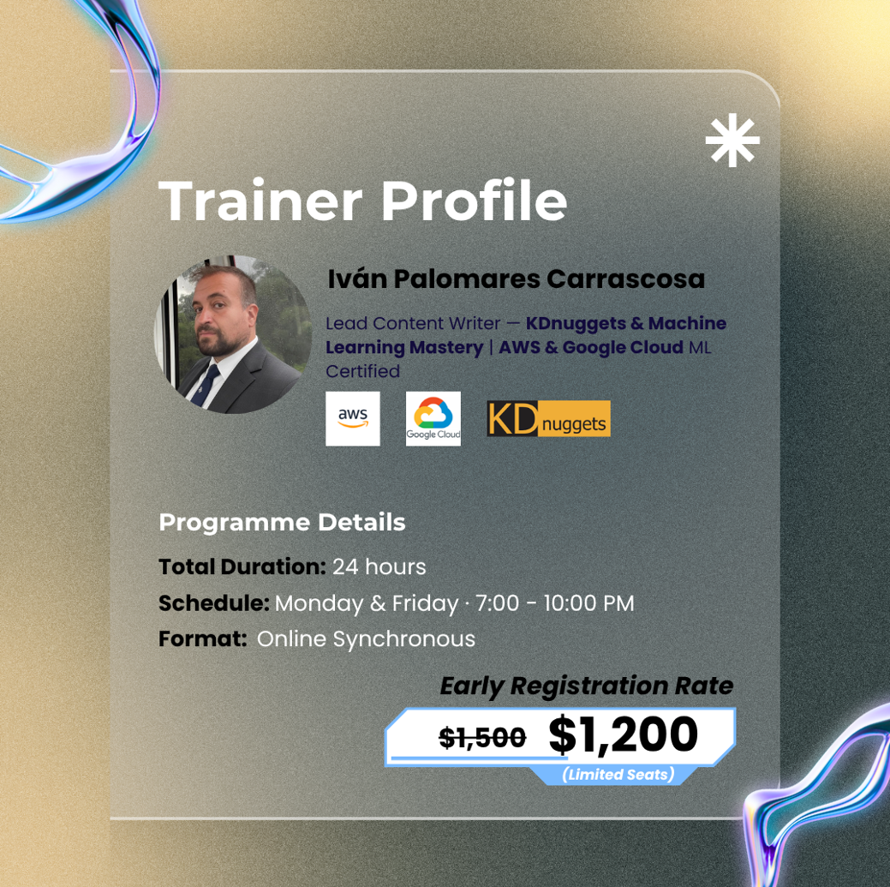
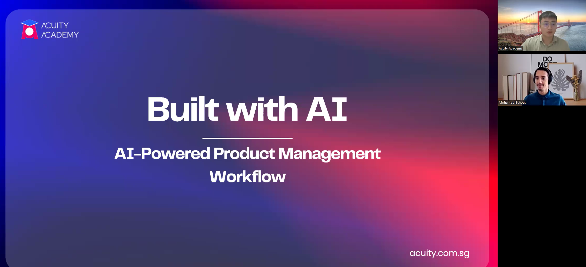
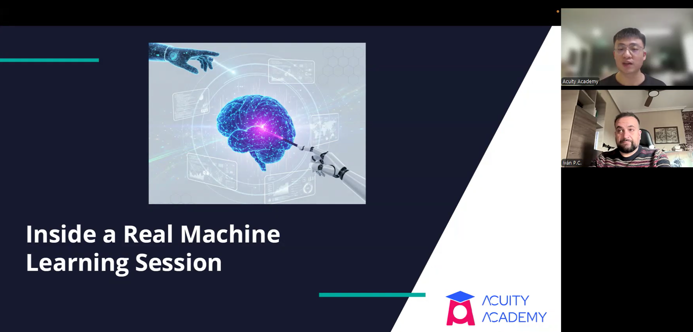

The market we walked into
Open any LinkedIn feed in Singapore right now and you'll find a dozen "AI for Professionals" cohorts, most carrying SSG or SkillsFuture subsidies that knock 50–70% off the sticker price. The default assumption among learners is simple: if it isn't subsidised, why pay?
We deliberately went the other direction. Both spring 2026 cohorts — the AI-Powered Product Management course and the Machine Learning Foundation course — launched without subsidy. Not because we couldn't compete on price, but because we believed the subsidised layer of the market was solving the wrong problem.
Workflows, not literacy
Most AI courses today teach what we'd call literacy: what a transformer is, what RAG means, how to write a useful prompt. That's table stakes in 2026. The gap we kept hearing in pre-launch interviews wasn't literacy. It was application.
A product manager at a fintech can now generate twelve PRD variants in an afternoon. She still doesn't know which one to ship. A backend engineer can fine-tune a model over the weekend. He still can't get the pilot past his director. The bottleneck has moved from do you know the tool to can you make a defensible decision with it.
Both courses were designed around that shift. We built them as workflow systems — a repeatable path from messy input to defensible output, with rubrics, artifacts, and a capstone that ships.
AI-Powered Product Management: designing for the PM under pressure
The audience is specific. PMs and BAs at the 3–7 year mark, facing two simultaneous pressures: ship faster than ever, and prove they're not the role AI replaces next.
The 16-hour course is structured as six modules tracking a single decision cycle — framing and constraints, evidence and synthesis, options generation with guardrails, prioritisation against a trade-off rubric, decision narrative and stakeholder communication, and a capstone build. Each module produces an artifact a learner can fold into their portfolio. By module six, they've written a decision narrative, applied a prioritisation rubric to a realistic PM case, and drafted a PRD excerpt — graded pass/fail with three concrete improvement notes.
The capstone isn't a certificate-of-completion exercise. It's portfolio insurance. The thesis is that the strongest professional signal a PM can carry in 2026 isn't another AI literacy badge; it's a worked example that demonstrates judgement under realistic constraint.


Machine Learning Foundation: escaping tutorial hell
The ML cohort solves a different problem. Software engineers, AI developers, and IT professionals know what tutorial hell looks like — twelve Kaggle notebooks, three Coursera certificates, zero pilots running in their actual workplace.
The deliverable we promised, and the one we organised everything around, is a pilot-ready workplace ML project package: a blueprint, an evaluation design, and a deployment pathway. The activation hook is a seven-day deadline on the first draft blueprint, because the failure mode for technical learners isn't motivation — it's drift.
Our trainer focuses on the high-level business framing — what does this model need to predict, who owns the outcome, what data exists, what does success look like at pilot stage — and the cohort structure forces the lifecycle thinking that free YouTube paths skip. The pitch, in plain terms: stop building models that live in notebooks.


The webinar as the doorway
Before either course opens, the first touchpoint a learner has with us is a free public webinar. The thinking was straightforward — for an unfamiliar brand selling an unfamiliar product at full price, you have to give people a real taste of the thinking before you can credibly ask for payment. The webinar was meant to be that taste.
Each session is built around the basics of the topic — what AI-augmented product decisions actually look like in a working PM's week, what a workplace ML pilot really involves end to end — paired with a preview of how the course translates that into a repeatable workflow. It's part lecture, part trailer. The promise to attendees is that even if they never enrol, they walk away with a clearer mental model of the space than they came in with.
To run this at scale without burning the trainers out, we record the first live session and replay it through our webinar kit. The kit handles scheduling, registration capture, simulated live chat, and the post-session follow-up sequence. From the attendee's perspective the experience is indistinguishable from a live broadcast; from ours, it's a single asset working across multiple time slots and audiences.
On paper, the webinar was supposed to do three jobs at once: educate, build trust, and qualify the attendee into a consult. A strong piece of the funnel. In practice — as the next section shows — the part that broke was the assumption that this audience would give us their evening at all.


Two weeks in
The numbers from week two are sobering. Combined, the two landing pages have served roughly 2,400 visits. Across both cohorts: ten webinar sign-ups, zero consults booked, zero paid enrolments.
The instinct is to read this as a positioning failure, and it might be. But we don't think it's about price, and we don't think it's about audience — the pre-launch conversations confirmed both. The signal we're picking up is that webinars themselves are a fatigued channel for this segment. Working PMs and engineers won't give us forty-five minutes of their evening on the hope that an unfamiliar brand might be useful.
What we're changing
Going into week three, we're pivoting hard.
For the AI PM cohort, we've activated our two named trainers, Christie and Tylor, to promote through their own networks, started corporate outreach to L&D teams, and begun running consults with warm email clickers rather than waiting for them to self-select into a webinar. The consult itself has a twelve-minute structure: diagnose the specific decision bottleneck the PM is facing, prescribe how the workflow addresses it, and pre-handle the two predictable objections — I'll wait for a subsidised course and I can just use ChatGPT.
For the ML cohort, we've moved off the webinar as the primary entry point entirely. The new lead path is one-on-one outreach to warm clickers and direct follow-ups to webinar registrants from week one. We also renamed the session itself — from a generic title to "Real Machine Learning Training Session" — to signal that the content is implementation, not introduction.
What we're taking forward
A few things we'd believed before launch and now believe more strongly.
The subsidised layer of the market is a different product. Trying to compete with it on price or signalling is a losing position. The defensible position is the one subsidised programmes structurally can't reach — workplace-tailored, decision-grade outputs the learner walks away owning.
Webinars are not a default funnel anymore. They worked when attention was cheaper. For this audience, in this market, in 2026, the funnel that converts is the consult — a fifteen-minute conversation where the prospective learner names their actual problem and we name how the cohort addresses it. Everything upstream of that consult should be designed to produce it, not to be it.
The capstone is the product. The course is a system for getting learners to a capstone they can show. Modules, slides, lecture quality — these matter only insofar as they end with a tangible artifact in the learner's hands.
We'll publish a week-four update with the post-pivot numbers.